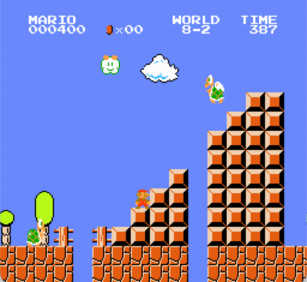
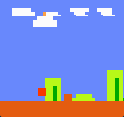

Gym-Super-Mario-Bros¶
概述¶
这里是家喻户晓的 《超级马里奥兄弟》 系列游戏，游戏中玩家需要操控一个马里奥进行移动与跳跃，躲避通往终点过程中的深坑与敌人，吃到更多的金币来获取更高的分数。游戏中还会有许多的有趣的道具，来为你提供不同的效果。gym-super-mario-bros 环境正是任天堂超级马里奥兄弟游戏经过 OpenAI Gym 封装后的环境。 游戏截图如下：
{kind=link}
安装¶
安装方法¶
pip install gym-super-mario-bros
验证安装¶
运行如下 Python 程序，如果没有报错则证明安装成功。
from nes_py.wrappers import JoypadSpace
import gym_super_mario_bros
from gym_super_mario_bros.actions import SIMPLE_MOVEMENT
env = gym_super_mario_bros.make('SuperMarioBros-v0')
env = JoypadSpace(env, SIMPLE_MOVEMENT)
done = True
for step in range(5000):
if done:
state = env.reset()
state, reward, done, info = env.step(env.action_space.sample())
env.render()
env.close()
安装失败的解决办法¶
常见的一个错误：
Traceback (most recent call last):
File "test_mario.py", line 13, in <module>
state, reward, done, info = env.step(env.action_space.sample())
File "/Users/wangzilin/opt/anaconda3/envs/mario_test/lib/python3.8/site-packages/nes_py/wrappers/joypad_space.py", line 74, in step
return self.env.step(self._action_map[action])
File "/Users/wangzilin/opt/anaconda3/envs/mario_test/lib/python3.8/site-packages/gym/wrappers/time_limit.py", line 50, in step
observation, reward, terminated, truncated, info = self.env.step(action)
ValueError: not enough values to unpack (expected 5, got 4)
这是由于 gym-super-mario-bros 库的更新有时跟不上 gym 库的更新，而在执行 pip install gym-super-mario-bros 时会默认安装最新的 gym。 那么解决办法就是给 gym 降级。 这里 gym-super-mario-bros 版本为 7.4.0，gym 版本为0.26.2。我们将 gym 版本降低到 0.25.1 可以解决问题。
pip install gym==0.25.1
环境介绍¶
游戏规则¶
模拟器内置《超级马里奥兄弟》与《超级马里奥兄弟2》两个游戏，详细的玩法和规则可以参照文末的维基百科链接。 对于《超级马里奥兄弟》，在寻常的三条命闯 32 关之外，游戏还提供一条命闯任何一个单独关卡、随机关卡的选项（《超级马里奥兄弟2》目前不支持）：
# 《超级马里奥兄弟》3条命从 1-1 到 8-4
env = gym_super_mario_bros.make('SuperMarioBros-v0')
# 《超级马里奥兄弟2》3条命从 1-1 到 8-4
env = gym_super_mario_bros.make('SuperMarioBros2-v0')
# 1条命闯 3-2
env = gym_super_mario_bros.make('SuperMarioBros-3-2-v0')
# 1条命随机通关 1-4 2-4 3-4 4-4 （死亡后游戏结束，环境会继续随机选择一个关卡开始新的游戏）
env = gym.make('SuperMarioBrosRandomStages-v0', stages=['1-4', '2-4', '3-4', '4-4'])
键盘交互¶
在拥有用于渲染的显示器设备时，可以尝试用键盘操作。环境提供了命令行接口，具体的启动方式如下：
# 启动 1-4 关卡
gym_super_mario_bros -e 'SuperMarioBrosRandomStages-v0' -m 'human' --stages '1-4'
动作空间¶
gym-super-mario-bros 的动作空间默认包含任天堂红白机全部的 256 个离散动作。
为了压缩这个大小（利于智能体学习），环境默认提供了动作 wrapper JoypadSpace 来降低动作维度：可选的动作集合及其含义如下：
# actions for the simple run right environment
RIGHT_ONLY = [
['NOOP'],
['right'],
['right', 'A'],
['right', 'B'],
['right', 'A', 'B'],
]
# actions for very simple movement
SIMPLE_MOVEMENT = [
['NOOP'],
['right'],
['right', 'A'],
['right', 'B'],
['right', 'A', 'B'],
['A'],
['left'],
]
# actions for more complex movement
COMPLEX_MOVEMENT = [
['NOOP'],
['right'],
['right', 'A'],
['right', 'B'],
['right', 'A', 'B'],
['A'],
['left'],
['left', 'A'],
['left', 'B'],
['left', 'A', 'B'],
['down'],
['up'],
]
例如：
env = gym_super_mario_bros.make('SuperMarioBros-v0')
# 使用 SIMPLE_MOVEMENT
env = JoypadSpace(env, SIMPLE_MOVEMENT)
# 或者自己设置动作空间为只有向右和向右跳
env = JoypadSpace(env, [["right"], ["right", "A"]])
对于 SIMPLE_MOVEMENT 所代表的 7 维离散动作空间，使用gym环境空间定义则可表示为：
action_space = gym.spaces.Discrete(7)
状态空间¶
gym-super-mario-bros 的状态空间输入是图像信息，及三维的张量矩阵（datatype=uint8）。此外，游戏的不同版本对应的图像分辨率 240*256*3 相同，但版本越高，图像越简略（像素块化），具体如下所示：
v3 对应的游戏截图如下（ v0 游戏截图在文档最开始展示过了）
{kind=link}
奖励空间¶
我们希望马里奥能更多地**向右**移动、更**快**地抵达终点而**不会死亡**，因此每一帧的奖励的设置由如下三部分组成：
v：代表连续的两帧之间，马里奥的x坐标之差（可以理解为向右的速度），有正有负；c：每一帧的用时，简单理解为每一帧都有一个负的reward，用来push智能体更快到达终点；d：死亡的惩罚，如果马里奥死亡，给与 -15 的高额惩罚；
总的奖励 r = v + c + d
奖励被 clip 到 (-15,15)
终止条件¶
gym-super-mario-bros 环境每个 episode 的终止条件是遇到以下任何一种情况：
马里奥成功通关
马里奥死亡
倒计时结束
info 中包含的额外信息¶
在与环境交互的每个 step，环境都会返回 info 字典，包含 获取的硬币、当前累计的分数、剩余的时间以及马里奥当前的坐标等信息。具体内容如下：
Key |
Type |
Description |
|---|---|---|
coins
|
int |
The number of collected coins |
flag_get
|
bool |
True if Mario reached a flag or ax |
life
|
int |
The number of lives left, i.e., {3, 2, 1} |
score
|
int |
The cumulative in-game score |
stage
|
int |
The current stage, i.e., {1, …, 4} |
status
|
str |
Mario’s status, i.e., {‘small’, ‘tall’, ‘fireball’} |
time
|
int |
The time left on the clock |
world
|
int |
The current world, i.e., {1, …, 8} |
x_pos
|
int |
Mario’s x position in the stage (from the left) |
y_pos
|
int |
Mario’s y position in the stage (from the bottom) |
内置环境¶
内置有多个环境，包含《超级马里奥兄弟》的"SuperMarioBros-v0"、 "SuperMarioBros-v1"、 "SuperMarioBros-v2" 和 "SuperMarioBros-v3" ，以及《超级马里奥兄弟2》的"SuperMarioBros2-v0"和 "SuperMarioBros2-v1"。
此外，《超级马里奥兄弟》还可以选定特定关卡进行闯关，例如 "SuperMarioBros-1-1-v0" 。
录像保存¶
采用 gym.wrappers.RecordVideo 类进行录像保存：
import gym
import time
from nes_py.wrappers import JoypadSpace
import gym_super_mario_bros
from gym_super_mario_bros.actions import SIMPLE_MOVEMENT
video_dir_path = 'mario_videos'
env = gym_super_mario_bros.make('SuperMarioBros-v0')
env = JoypadSpace(env, SIMPLE_MOVEMENT)
env = gym.wrappers.RecordVideo(
env,
video_folder=video_dir_path,
episode_trigger=lambda episode_id: True,
name_prefix='mario-video-{}'.format(time.ctime())
)
# run 1 episode
env.reset()
while True:
state, reward, done, info = env.step(env.action_space.sample())
if done or info['time'] < 250:
break
print("Your mario video is saved in {}".format(video_dir_path))
try:
# 环境的析构函数有问题，故需要异常来避免报错
del env
except Exception:
pass
DI-zoo 可运行代码示例¶
下面提供一个完整的 gym-super-mario-bros 环境 config，采用 DQN 作为基线算法。请在DI-engine/dizoo/mario 目录下运行mario_dqn_main.py 文件。
from easydict import EasyDict
mario_dqn_config = dict(
exp_name='mario_dqn_seed0',
env=dict(
collector_env_num=8,
evaluator_env_num=8,
n_evaluator_episode=8,
stop_value=100000,
replay_path='mario_dqn_seed0/video',
),
policy=dict(
cuda=True,
model=dict(
obs_shape=[4, 84, 84],
action_shape=2,
encoder_hidden_size_list=[128, 128, 256],
dueling=True,
),
nstep=3,
discount_factor=0.99,
learn=dict(
update_per_collect=10,
batch_size=32,
learning_rate=0.0001,
target_update_freq=500,
),
collect=dict(n_sample=96, ),
eval=dict(evaluator=dict(eval_freq=2000, )),
other=dict(
eps=dict(
type='exp',
start=1.,
end=0.05,
decay=250000,
),
replay_buffer=dict(replay_buffer_size=100000, ),
),
),
)
mario_dqn_config = EasyDict(mario_dqn_config)
main_config = mario_dqn_config
mario_dqn_create_config = dict(
env_manager=dict(type='subprocess'),
policy=dict(type='dqn'),
)
mario_dqn_create_config = EasyDict(mario_dqn_create_config)
create_config = mario_dqn_create_config
# you can run `python3 -u mario_dqn_main.py`
基准算法性能¶
SuperMarioBros-x-x-v0
SuperMarioBros-1-1-v0 + DQN
SuperMarioBros-1-2-v0 + DQN
SuperMarioBros-1-3-v0 + DQN
参考资料¶
gym-super-mario-bros 源码
超级马里奥兄弟 维基百科-超级马里奥兄弟
超级马里奥兄弟2 维基百科-超级马里奥兄弟2